STACK
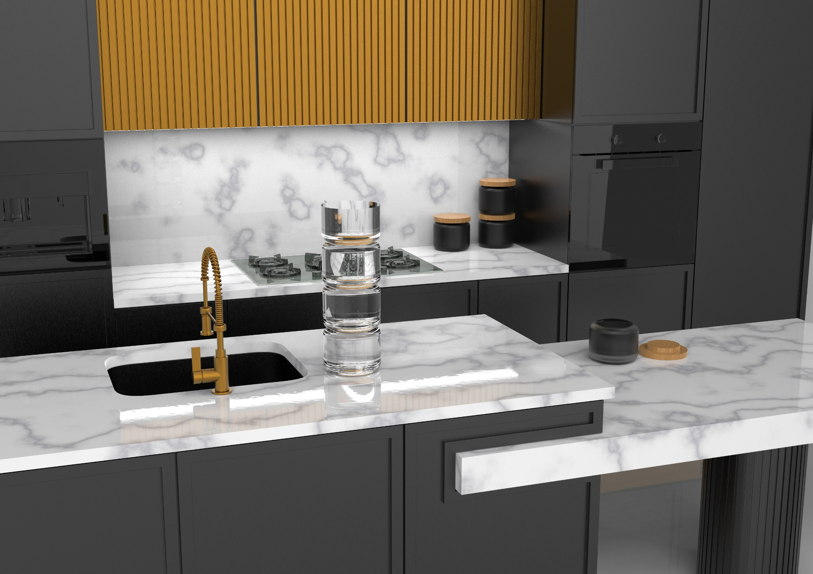
01 — CONTEXT
A COHERENT FAMILY, NOT ISOLATED OBJECTS.
STACK develops a water jug and storage containers as one product family, using Rigtig’s design language as an academic reference. The drawings and renders study the family; they do not document a manufactured product.
One formal language connects different functions.
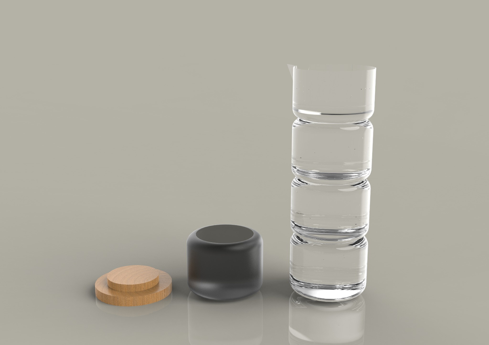
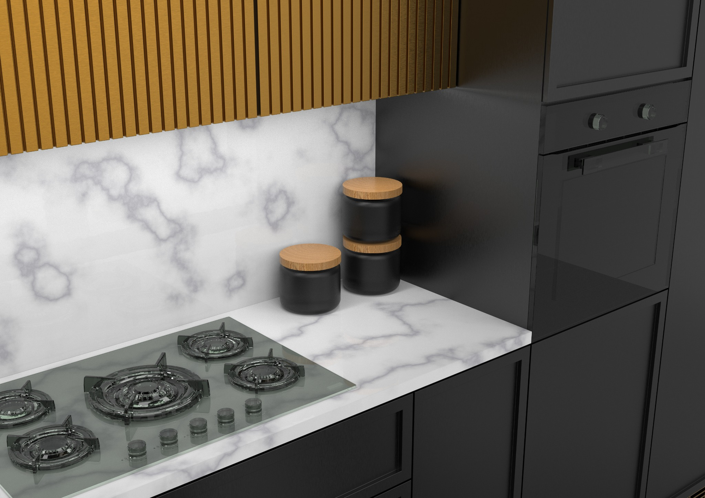
02 — FORM EXPLORATION
SOFT GEOMETRY. REPEATED PROPORTIONS. MATERIAL CONTRAST.
The collection develops simple cylindrical volumes with rounded transitions. Repetition creates rhythm and a recognisable family, while transparent bodies, neutral finishes and wooden elements introduce a restrained domestic character.
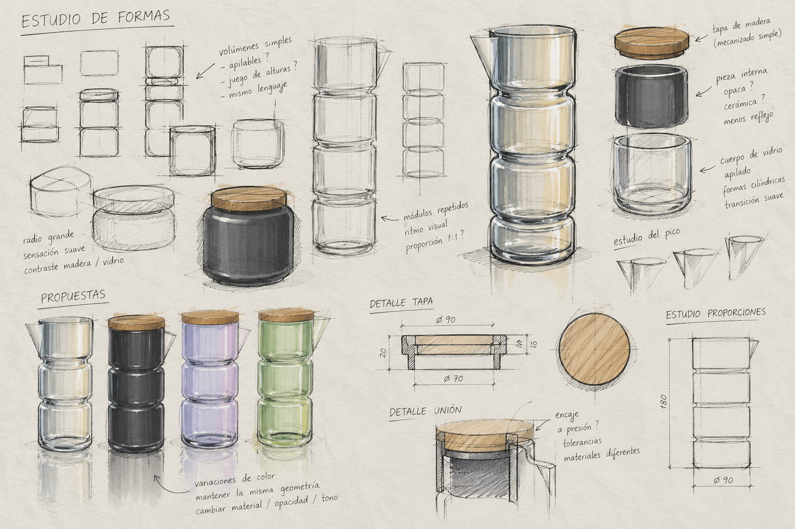
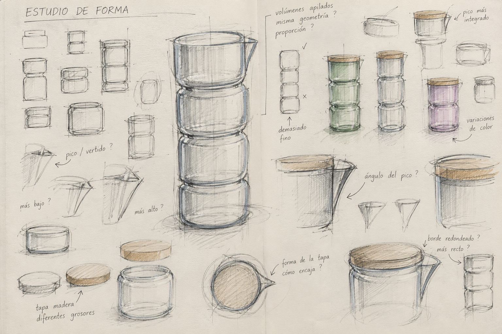
03 — ERGONOMICS + SYSTEM
USE IS BUILT INTO THE FORM.
The hand-position studies compare grasping the jug, tilting it to pour, holding the container and lifting the lid. These drawings make grip, proportion and everyday handling part of the development. Repeated cylindrical volumes connect the objects visually and organise the proposed stacking system.
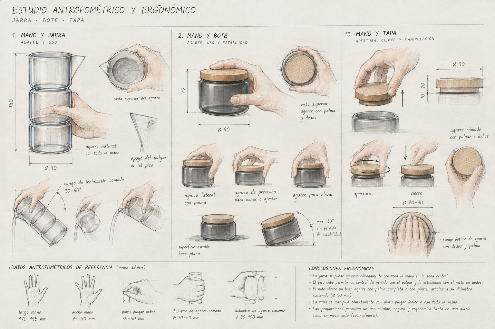
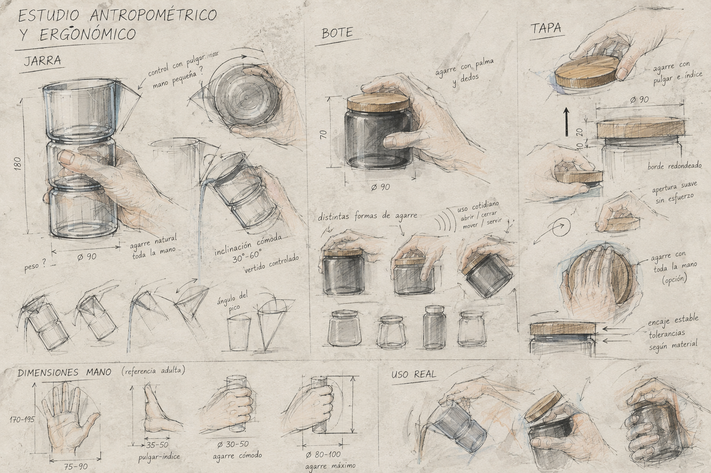
04 — WATER JUG
A VERTICAL SEQUENCE OF TRANSPARENT VOLUMES.
The proposed water jug uses a sequence of rounded transparent volumes. Its segmented construction gives the object a distinctive identity while preserving a simple silhouette. The upper element incorporates the pouring area without breaking the continuity of the system.
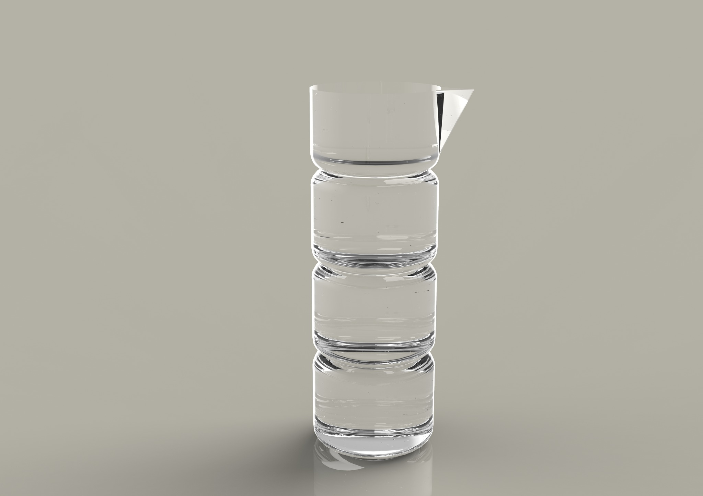
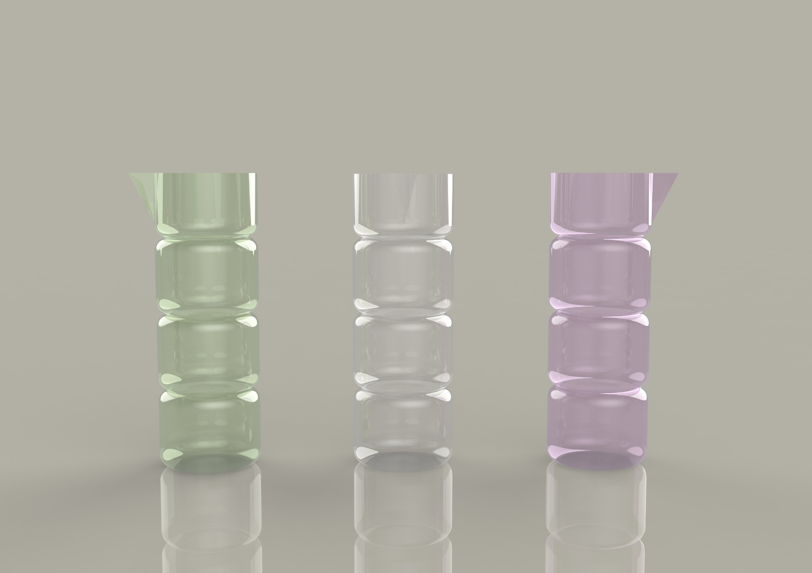
05 — STORAGE
MATERIAL CONTRAST AT A DOMESTIC SCALE.
The storage containers repeat the same rounded geometry in a compact format. A wooden lid introduces a tactile contrast with the body and reinforces the family through proportion and stacking.
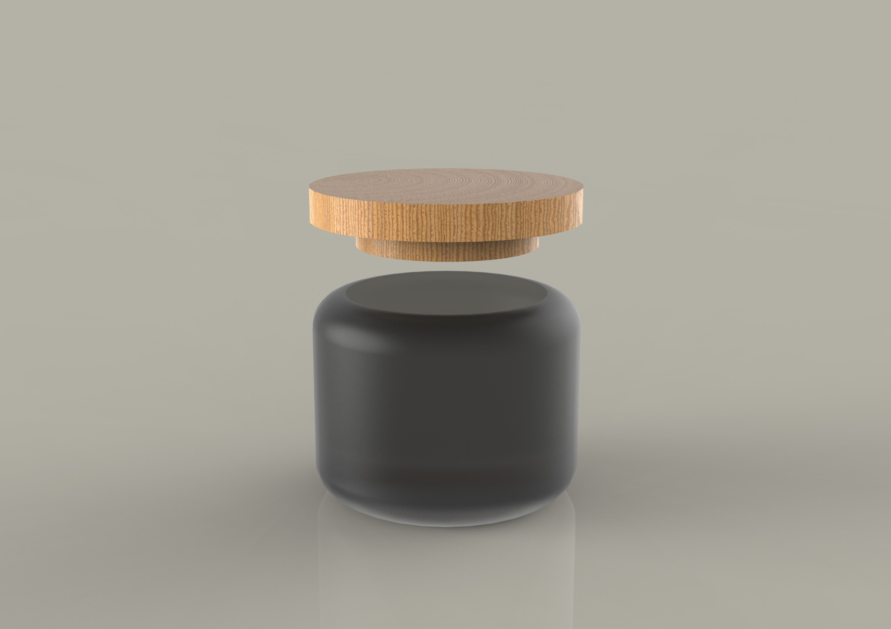
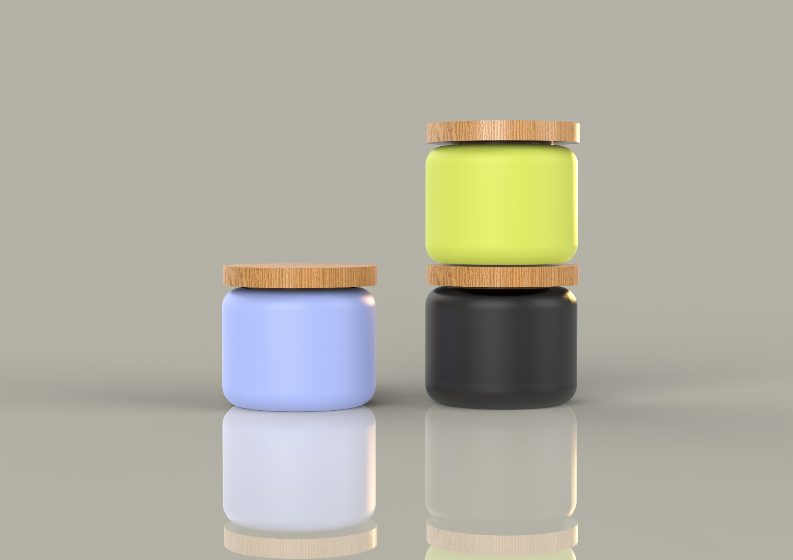
06 — TECHNICAL DEFINITION
FROM FORM TO DEFINITION.
The jug drawing separates the spout detail from the union between repeated modules. The container drawing shows the lid fit and its section. Together they define proportions, radii, wall thicknesses and connections beyond the rendered appearance.
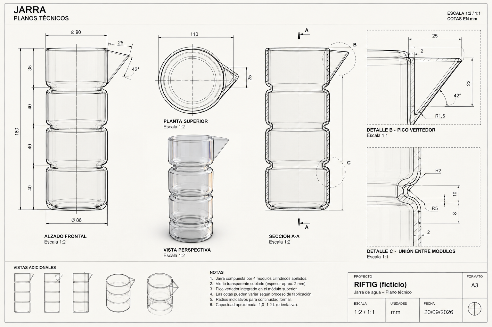
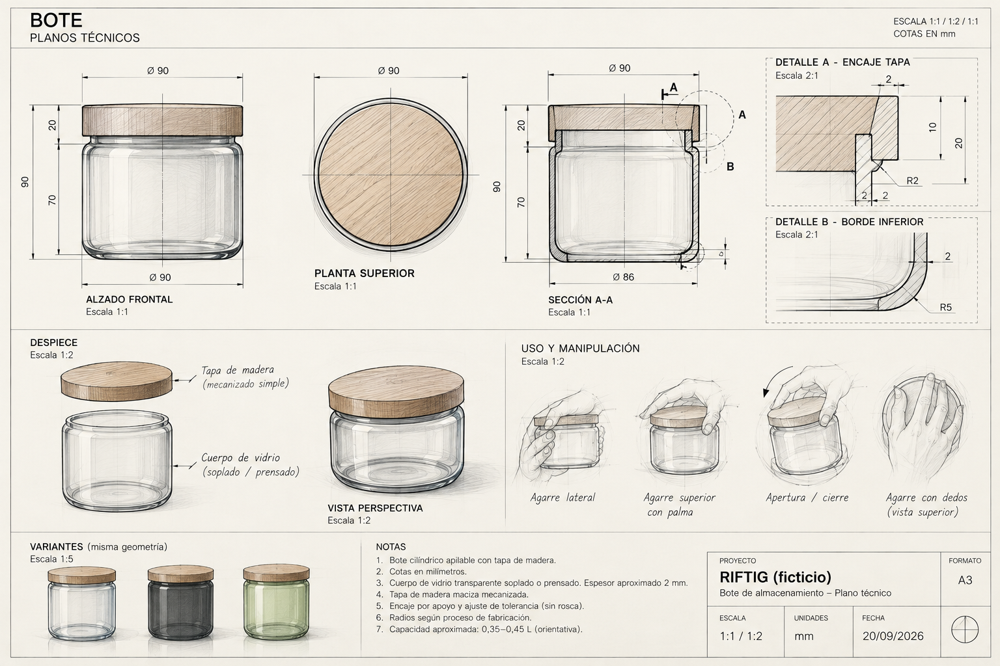
07 — RESULT
ONE LANGUAGE. ONE COLLECTION.
The jug and containers share rounded transitions and repeated proportions, while their different openings respond to pouring and storage. This is a product-family proposal supported by ergonomic studies and technical definition, without a claim of physical manufacture or user testing.
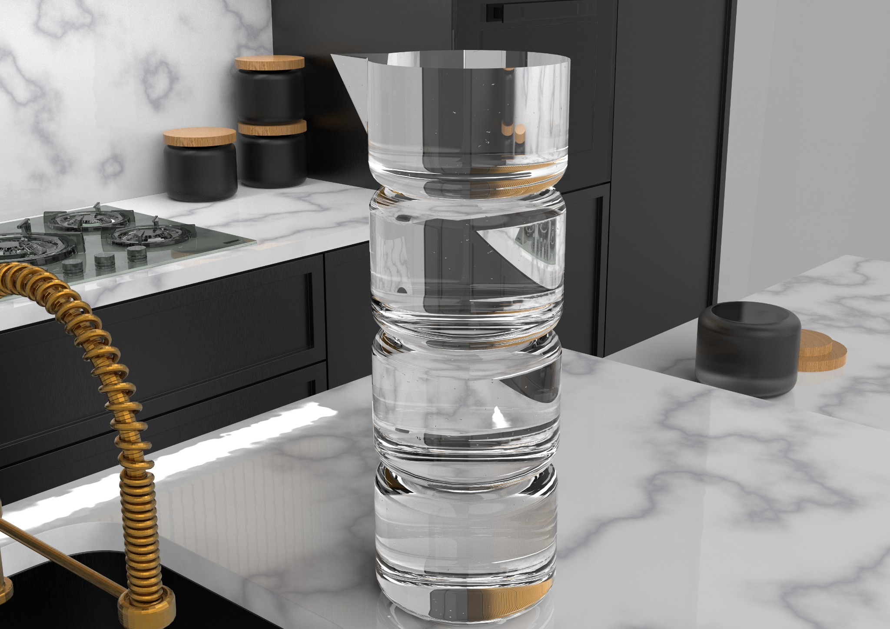
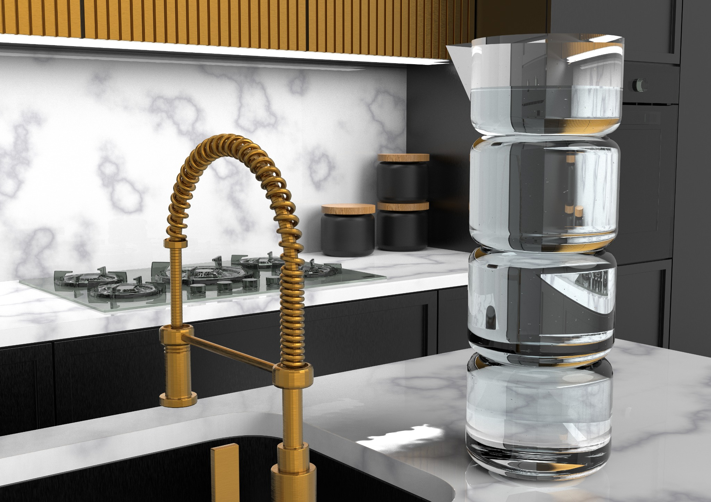